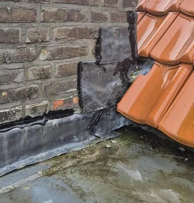
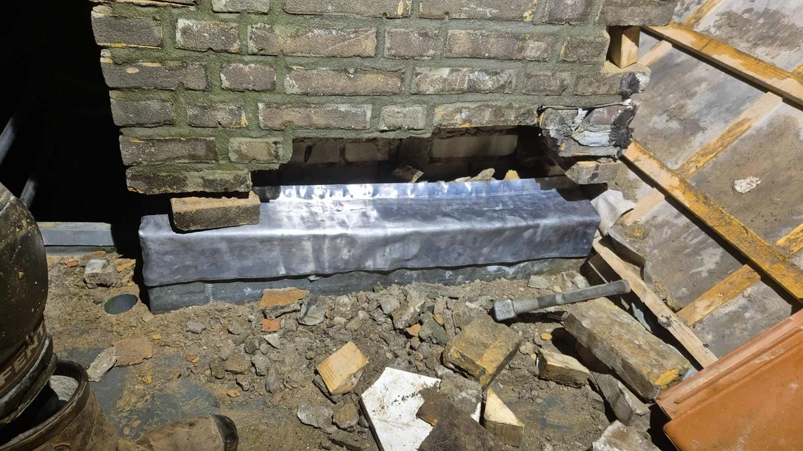
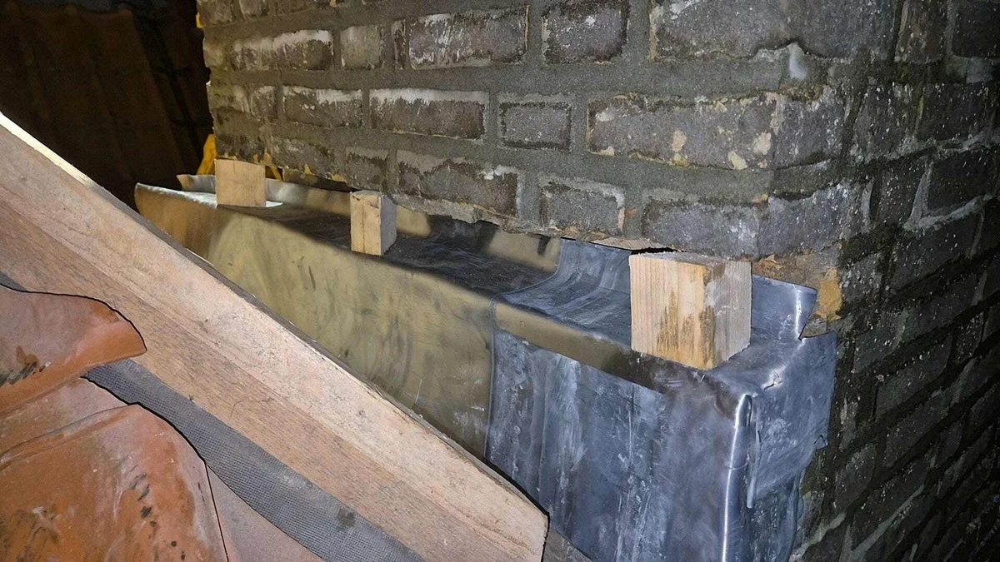

Schoorsteenlood spouw vervangen
Schoorsteenlood een belangrijke aansluiting die voor een vervelende lekkage kan zorgen. Vervang uw schoorsteenlood tot in de spouw!
- ✓Benieuwd of uw schoorsteen geschikt is? Kom vrijblijvend in contact!
- ✓Onze experts staan voor u klaar. Ontvang gratis advies of meer informatie over uw specifieke situatie!
- ✓Heldere inspectie en duidelijke uitleg vooraf

Situaties uit de praktijk
Beelden van dakdetails, slijtage of werkzaamheden die passen bij dit onderwerp.


Wat u moet weten
Uw schoorsteen is een belangrijk onderdeel van uw woning of pand. De aanwezigheid van een schoorsteen zorgt er altijd voor dat er een extra aansluiting nodig is tussen uw schoorsteen en uw dak. Deze moet vanzelfsprekend waterdicht zijn. Wanneer u, lekkage ervaart aan uw schoorsteen, dan is veroudert loodwerk een veelvoorkomend probleem. Lees alles over schoorstenen op onze pagina schoorsteen . Vanuit de bouw wordt schoorsteenlood aangebracht tot in de spouw en het loodwerk aanbrengen tot in de spouw is dan ook een gegarandeerde methode dat de aansluiting waterdicht is!
Wanneer schoorsteenlood tot in spouw vervangen?
Het vervangen van schoorsteenlood tot in de spouw is een specialistische klus. Veelal wordt gedacht dat het noodzakelijk is om de schoorsteen af te breken tot het loodwerk, het loodwerk opnieuw aan te brengen tot in de spouw en vervolgens weer op te metselen. Dit is echter alleen zo, wanneer het metselwerk van uw schoorsteen in dusdanig slechte staat is, dat onderstaande methode niet uitvoerbaar is.
Bij Daklekkages Opgelost, frezen we de voeg en het metselcement geheel uit, tot in de spouw. Met kleine (soortgelijke) bouwstempels wordt de schoorsteen gestut om scheurvorming en omvallen te voorkomen. Vervolgens wordt het loodwerk tot in de spouw getrokken en vastgezet middels voegklemmen. Er worden hardhouten spalken in de voeg geplaatst en de voeg wordt middels metselmortel gevuld, de hardhouten spalken zorgen voor een stevige constructie terwijl het metselmortel uithard. Tot slot wordt patineerolie aangebracht op het loodwerk.
Het is goed om wanneer u, uw schoorsteenlood tot in de spouw wilt laten plaatsen, eerst uw schoorsteen aan een grondige inspectie te laten ondergaan of uw schoorsteen geschikt is om deze methode op toe te passen. Wanneer Daklekkages Opgelost na inspectie stelt dat dit mogelijk is, nemen wij het risico van eventuele scheurvorming door uitvoering voor onze rekening. Deze inspectie is dan ook noodzakelijk voordat wij definitief starten met de opdracht. Wanneer het metselwerk in onvoldoende staat is, is het opnieuw metselen van uw schoorsteen onontkomelijk!
Benieuwd of uw schoorsteen geschikt is? Kom vrijblijvend in contact!
Kosten schoorsteenlood tot in spouw vervangen?
De kosten voor het vervangen van schoorsteenlood tot in de spouw, liggen vanzelfsprekend hoger dan het vervangen van het schoorsteenlood conform het bouwbesluit. Dit komt deels voor uit de grotere benodigde expertise en het risico wat wij geheel voor rekening nemen. Omdat iedere schoorsteen verschilt is er geen vaste prijs te noemen voor het vervangen van schoorsteenlood tot in de spouw. De kosten hangen af van bereikbaarheid, staat van het metselwerk, benodigde te treffen veiligheidsvoorzieningen, situering en omvang van de schoorsteen.
Ter indicatie voor een schoorsteen met een omvang van 80 x 80 cm op een rijtjeswoning, bedragen de kosten voor het vervangen van schoorsteenlood tot in de spouw ca. €1.250,- exclusief btw.
Advies of meer informatie nodig?
Onze experts staan voor u klaar. Ontvang gratis advies of meer informatie over uw specifieke situatie!
Wilt u zekerheid over uw dak?
Laat de situatie beoordelen voordat schade groter wordt. U krijgt helder advies over wat nodig is, wat kan wachten en welke oplossing duurzaam is.